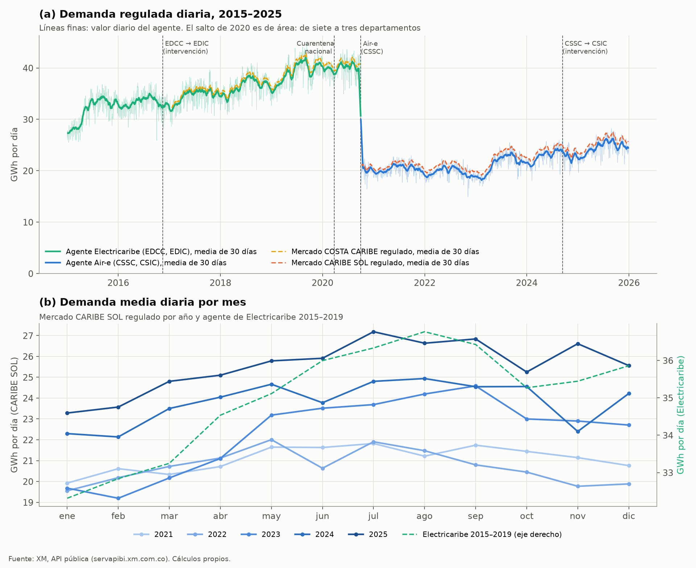
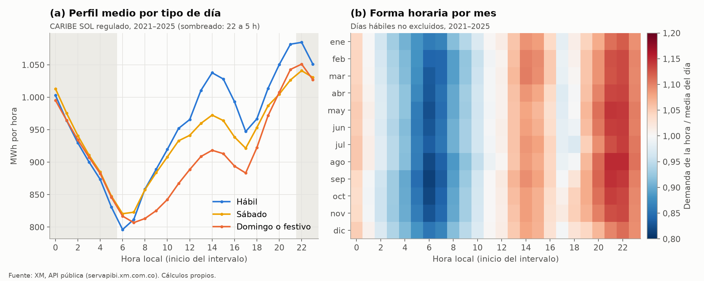
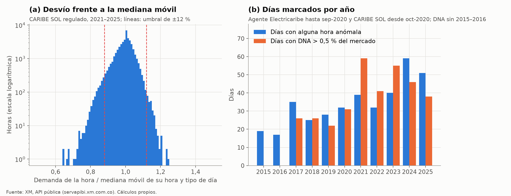
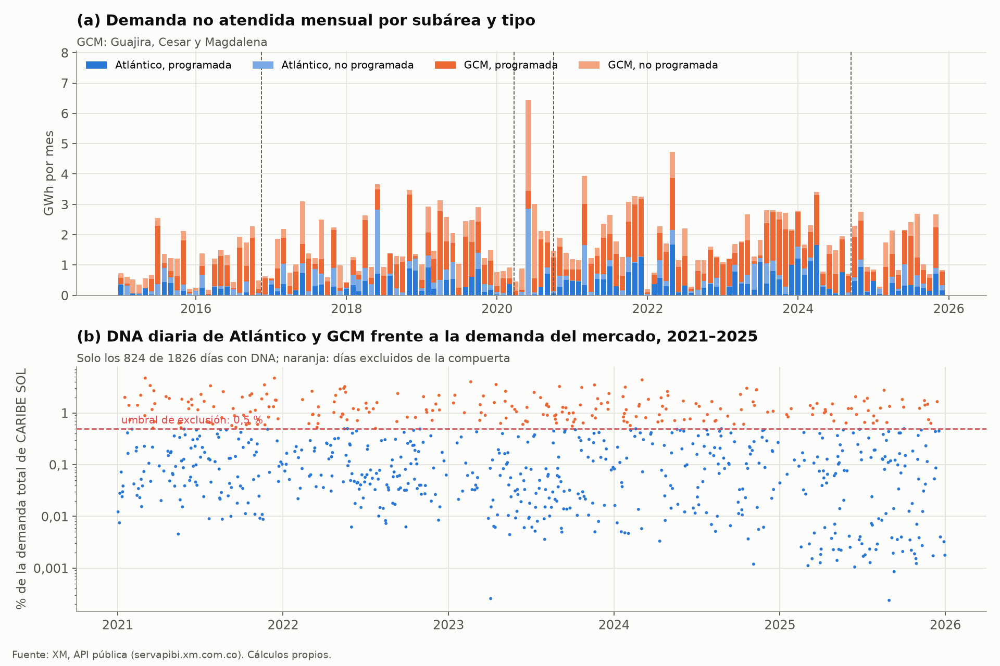
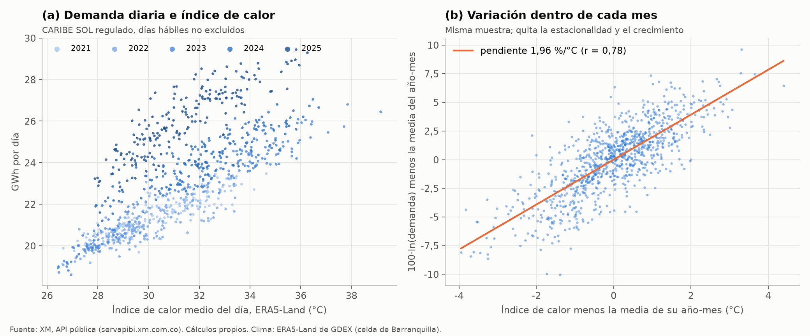

Demanda horaria de XM#
XM, el operador del sistema interconectado y administrador del mercado mayorista colombiano, publica la demanda de energía de cada hora por mercado de comercialización, por agente y por subárea en una API pública (XM S.A. E.S.P., 2026). Es la única fuente horaria de la tesis y la única que mide energía entregada en el sistema, no facturada ni declarada en una encuesta. Este capítulo describe las series descargadas, su calidad y el camino que siguen hasta la compuerta horaria, que estima la respuesta de la demanda de cada hora al calor del día (\(b_h\)) y decide si la forma horaria del uso del A/C se puede calibrar con ellas (Respuesta horaria al calor).
Qué es#
La demanda comercial que publica XM es la energía que cada comercializador retira del sistema en sus fronteras comerciales, medida hora a hora y liquidada en el mercado mayorista, más las pérdidas que el mercado le asigna. XM la agrega por mercado de comercialización (el área de un operador de red), por agente comercializador y por tipo de usuario (regulado y no regulado). El mercado regulado reúne a los usuarios con tarifa fijada por la regulación, entre ellos todos los hogares, y también comercios y entidades oficiales pequeñas. El no regulado reúne a los grandes consumidores que negocian su precio.
En la costa Caribe el área del mercado y el comercializador cambiaron durante el periodo de estudio, y hasta septiembre de 2020 Electricaribe atendía siete departamentos en el mercado «COSTA CARIBE». Fue intervenida por la Superintendencia de Servicios Públicos en noviembre de 2016, y desde entonces su código de agente pasó de EDCC a EDIC. En octubre de 2020 el mercado se dividió y Air-e quedó con Atlántico, Magdalena y La Guajira en el mercado «CARIBE SOL» (agente CSSC). Air-e fue intervenida a su vez en septiembre de 2024, con el código CSIC desde el 13 de ese mes. Las fechas de cambio de código salen de los datos (Tabla 43), y el contexto institucional sigue lo que dice el script de descarga (scripts/compuerta/02_descargar_xm.py).
XM también publica la demanda no atendida (DNA) diaria por subárea eléctrica, programada (mantenimientos) y no programada (fallas). La tesis usa las subáreas Atlántico y GCM (Guajira, Cesar y Magdalena) para marcar los días con cortes de servicio.
Cobertura y estructura#
Se descargaron seis métricas en bloques de 31 días, 805 archivos JSON con unos 134 MB en total. Las series horarias traen un registro por día con 24 campos (Hour01 a Hour24, en kWh), en hora local de Colombia, que no tiene horario de verano. La hora Hour01 corresponde al intervalo de 00:00 a 01:00 y se guarda como hora 0. La DNA es diaria y solo trae los días con algún evento.
Métrica y entidad |
Serie |
Inicio |
Fin |
Días |
Días faltantes |
Valores ≤ 0 |
|---|---|---|---|---|---|---|
DemaCome / MercadoComercializacion |
COSTA CARIBE, regulado y no regulado |
14-ene-2017 |
30-sep-2020 |
1.356 |
0 |
0 |
DemaCome / MercadoComercializacion |
CARIBE SOL, regulado y no regulado |
1-oct-2020 |
13-oct-2026 |
2.204 |
0 |
0 |
DemaRealReg, PerdidasEnerReg, DemaComeReg / Agente |
EDCC (Electricaribe) |
1-ene-2015 |
14-nov-2016 |
684 |
0 |
110 (pérdidas) |
Ídem |
EDIC (Electricaribe intervenida) |
15-nov-2016 |
30-sep-2020 |
1.416 |
0 |
156 (pérdidas) |
Ídem |
CSSC (Air-e) |
1-oct-2020 |
12-sep-2024 |
1.443 |
0 |
3 (pérdidas) |
Ídem |
CSIC (Air-e intervenida) |
13-sep-2024 |
13-oct-2026 |
761 |
0 |
1 (pérdidas) |
DemaNoAtenProg / Subarea |
Atlántico; GCM |
ene-2015 |
may-2026 |
277; 456 con evento |
no aplica |
0 |
DemaNoAtenNoProg / Subarea |
Atlántico; GCM |
ene-2015 |
oct-2026 |
369; 1.229 con evento |
no aplica |
0 |
Las series horarias están completas, sin días faltantes, sin horas vacías y sin duplicados (Tabla 43, detalle en tablas/eda/xm_cobertura.csv). Los cuatro códigos de agente se suceden sin solaparse ni dejar huecos, de modo que forman una cadena continua de 4.304 días desde enero de 2015. El mercado COSTA CARIBE empieza el 14 de enero de 2017 aunque el pedido arranca el 1 de enero, porque la API no devuelve días anteriores. Los únicos valores no positivos son 270 horas de pérdidas negativas, casi todas de 2015 a 2018. El año 2026 se reserva para la prueba ciega, así que aparece en la cobertura pero no en el análisis exploratorio, que llega hasta diciembre de 2025.
En cada agente se cumple la identidad DemaComeReg = DemaRealReg + PerdidasEnerReg hora a hora (desviación máxima del orden de \(10^{-16}\)). Las pérdidas suman en promedio 1,5 % de la demanda comercial (entre 1,4 % y 1,6 % según el año, tablas/eda/xm_anual.csv). Una proporción tan baja es compatible con las pérdidas del sistema de transmisión que se asignan al comercializador, y no con las de distribución de la región, pero la documentación de la métrica no se revisó para confirmarlo. El mercado regulado CARIBE SOL supera en 4,4 % a la demanda regulada del agente Air-e (mediana de 4,1 %), porque incluye a los demás comercializadores con usuarios regulados en esa área. En COSTA CARIBE la diferencia con Electricaribe es de 1,8 %.
Variables que usa la tesis#
Variable (endpoint) |
Definición |
Uso en la tesis |
|---|---|---|
|
Demanda comercial horaria del mercado de Air-e, usuarios regulados, con pérdidas asignadas (kWh) |
Variable dependiente \(L_{d,h}\) de la compuerta horaria, 2021–2025 |
|
Ídem, usuarios no regulados |
Se suma a la regulada para escalar la DNA de cada día |
|
Demanda del mercado de Electricaribe en siete departamentos, 2017–2020 |
Contraste de robustez de \(b_h\) en 2017–2019 |
|
Demanda regulada de Electricaribe con pérdidas |
Contraste 2015–2019, cuando CARIBE SOL no existía |
|
Demanda real regulada de Air-e y pérdidas asignadas |
Contraste de robustez 2021–2025 (real + pérdidas) |
|
Energía no suministrada por cortes programados y no programados (kWh/día) |
Marca los días con DNA > 0,5 % de la demanda del mercado, que se excluyen |
Análisis exploratorio#
El análisis lo reproduce scripts/eda/xm.py, con el calendario (tipo de día, festivos, fin de año, Carnaval y Semana Santa) y los umbrales de scripts/compuerta/ para que las marcas coincidan con las de la compuerta.
Serie diaria y cambios de mercado#


Figura 49 Demanda regulada diaria de los agentes y mercados de 2015 a 2025 (a) y demanda media diaria por mes del mercado CARIBE SOL por año y de Electricaribe en 2015–2019 (b).#
El rasgo dominante de la serie es el salto de octubre de 2020 (Figura 49a). La demanda del agente baja a 52 % de la de septiembre, y la del mercado regulado a la misma fracción, porque el área pasa de siete a tres departamentos. No es un cambio de consumo, y por eso la compuerta no mezcla los dos periodos en una regresión: estima 2021–2025 con CARIBE SOL y usa Electricaribe solo como contraste. El cambio de código por la intervención de Air-e en septiembre de 2024 no produce un salto visible. Los 30 días siguientes quedan 4,4 % por debajo de los 30 anteriores, una caída del orden de la que trae la estacionalidad de septiembre a octubre (3,2 % en la media de 2021–2025). Tampoco el paso de EDCC a EDIC en 2016 cambia el nivel.
La pandemia frenó el crecimiento de la demanda regulada pero no la redujo. Frente al mismo mes de 2019, la de Electricaribe crecía entre 9 % y 11 % en enero y febrero de 2020, entre 1 % y 5 % de abril a junio, con la cuarentena nacional, y de −1 % a −2 % de julio a septiembre (scripts/eda/xm.py, salida en consola). En el mercado regulado el efecto neto fue una desaceleración y no una caída, lo que es compatible con más consumo en los hogares y menos en comercios y oficinas, aunque XM no separa los dos grupos. El año 2020 queda por fuera de la compuerta igual que en Respuesta horaria al calor, porque mezcla esa alteración de las rutinas con el cambio de mercado.
Entre 2021 y 2025 la demanda regulada de CARIBE SOL creció 21 %, de 7.695 a 9.327 GWh al año, con una pausa en 2022 (−1,8 %) y un aumento fuerte desde marzo de 2023 (Figura 49a). Los usuarios no regulados pesan entre 18 % y 22 % del mercado. En el año medio de 2021–2025, la demanda va de 20,9 GWh por día en enero a 23,9 GWh en julio, 14 % más (Figura 49b), y el ciclo sigue la temporada lluviosa y caliente de mayo a noviembre descrita en Clima. Con Electricaribe en 2015–2019 la forma estacional es parecida, de enero a agosto. En 2015 hay además una subida de unos 27 a 34 GWh por día entre marzo y mayo, mayor que la estacional, cuya causa no se pudo verificar. La compuerta la absorbe con los efectos fijos de año-mes.
Año |
COSTA CARIBE regulado |
CARIBE SOL regulado |
CARIBE SOL no regulado |
Agente, regulado |
DNA Atlántico |
DNA GCM |
Días con horas anómalas |
Días con DNA > 0,5 % |
|---|---|---|---|---|---|---|---|---|
2017 |
12.404 |
12.626 (EDIC) |
5,8 |
12,7 |
35 |
26 |
||
2018 |
13.511 |
13.286 (EDIC) |
8,9 |
10,6 |
25 |
26 |
||
2019 |
14.574 |
14.295 (EDIC) |
7,4 |
17,3 |
28 |
22 |
||
2020 |
11.178 (hasta sep.) |
1.917 (desde oct.) |
425 |
12.819 (EDIC + CSSC) |
6,2 |
16,1 |
32 |
31 |
2021 |
7.695 |
2.003 |
7.425 (CSSC) |
9,4 |
17,4 |
39 |
59 |
|
2022 |
7.560 |
2.169 |
7.202 (CSSC) |
6,4 |
12,1 |
32 |
41 |
|
2023 |
8.155 |
2.149 |
7.765 (CSSC) |
8,9 |
15,9 |
40 |
55 |
|
2024 |
8.723 |
2.058 |
8.366 (CSSC + CSIC) |
8,8 |
14,0 |
59 |
46 |
|
2025 |
9.327 |
2.073 |
8.938 (CSIC) |
5,4 |
13,0 |
51 |
38 |
Perfil horario por tipo de día y por mes#


Figura 50 Perfil horario medio del mercado CARIBE SOL regulado en 2021–2025 por tipo de día (a) y demanda de cada hora dividida por la media del día, por mes, en los días hábiles no excluidos (b).#
La demanda regulada tiene su mínimo a las 6 h y su máximo a las 22 h, con un segundo pico a las 14 h en los días hábiles (Figura 50a). El máximo es 36 % mayor que el mínimo, y la demanda media de la noche (22 a 5 h) es prácticamente igual a la del día (cociente de 1,00). Es un perfil muy distinto del de una ciudad de clima templado, compatible con un uso nocturno intenso de A/C y ventiladores, aunque XM no permite atribuirlo a un uso final. Los domingos y festivos cambian sobre todo el mediodía, que queda 12 % por debajo del de los días hábiles a las 14 h. De noche los tres tipos de día casi coinciden, lo que sugiere que la demanda nocturna es sobre todo residencial. Con Electricaribe en 2015–2019 la forma es la misma, con el pico a las 21 h y un cociente máximo/mínimo de 1,42 (tablas/eda/xm_perfil_horario.csv).
La forma relativa del día hábil casi no cambia entre meses (Figura 50b), y en todos la hora de 6 h queda entre 14 % y 19 % por debajo de la media del día y la de 22 h entre 11 % y 15 % por encima, con un pico nocturno algo más alto de mayo a octubre y más bajo en diciembre y enero. Que la forma sea tan estable entre meses mientras el nivel sube 14 % anticipa lo que encuentra la compuerta, una respuesta al calor casi plana entre horas (tablas/eda/xm_forma_mes_hora.csv).
Valores atípicos#


Figura 51 Cociente entre la demanda de cada hora y la mediana móvil de su hora y tipo de día en CARIBE SOL 2021–2025, con el umbral de ±12 % (a), y días marcados por año por horas anómalas o por DNA (b).#
La compuerta marca como anómala la hora que se aparta más de 12 % de la mediana móvil de la misma hora y tipo de día (29 días hábiles o 9 sábados, domingos o festivos alrededor). La distribución del cociente es estrecha y casi simétrica (Figura 51a), y las colas por fuera de ±12 % son caídas de servicio o fallas de medida más que días de consumo extremo. Con esta regla, 221 de los 1.826 días de 2021–2025 tienen al menos una hora anómala, la misma cifra de decision.json. Las horas marcadas se concentran a las 14 y 15 h (98 y 100 horas) y entre las 22 y 0 h (unas 70), y son pocas a las 6 h (26). Los días marcados aumentan en 2024 y 2025 (59 y 51, Tabla 45), sin que los datos de XM permitan saber si se debe a más cortes locales o a más fallas de medida.
Entre CARIBE SOL regulado y el agente Air-e el cociente horario va de 1,02 a 1,06 en el rango intercuartílico, pero llega a 1,50 a las 13 h del 8 de junio de 2024. Un desfase así entre dos series del mismo mercado indica un error de medida o de liquidación en una de ellas, no un cambio de consumo, y es el tipo de hora que la regla del 12 % excluye.
Demanda no atendida#


Figura 52 Demanda no atendida mensual de las subáreas Atlántico y GCM por tipo (a) y DNA diaria de las dos subáreas como porcentaje de la demanda total del mercado CARIBE SOL en 2021–2025 (b).#
La DNA de Atlántico y GCM suma entre 13 y 27 GWh al año (Tabla 45), menos de 0,3 % de la demanda del mercado, pero se concentra en pocos días. Hubo DNA en 824 de los 1.826 días de 2021–2025, y en 239 superó 0,5 % de la demanda del mercado, el umbral con el que la compuerta excluye el día (Figura 52b). En 2021–2025 la subárea GCM aporta 65 % de la energía no atendida y 73 % es programada. El evento más grande del periodo fue no programado, el 24 de junio de 2020, con 2.608 MWh en Atlántico y 2.285 MWh en GCM, más de 10 % de la demanda de COSTA CARIBE ese día (tablas/eda/xm_dna_eventos.csv). En 2021–2025 ningún día pasa de 4,7 % de la demanda del mercado (3 de marzo y 13 de diciembre de 2021).
Con las dos marcas, la de horas anómalas y la de DNA, se excluyen 427 días de 2021–2025, que coinciden con las exclusiones de la compuerta (Respuesta horaria al calor).
Relación con el calor#


Figura 53 Demanda diaria de CARIBE SOL regulado frente al índice de calor medio del día en los días hábiles no excluidos de 2021–2025 (a) y la misma relación con las dos variables centradas en la media de su año-mes (b).#
La demanda diaria sube con el índice de calor (HI) de ERA5-Land, pero en la nube bruta se mezcla con el crecimiento entre años, porque cada año queda en una franja más alta (Figura 53a, correlación de 0,72). Al restar a cada día la media de su año-mes, como hacen los efectos fijos de la compuerta, la relación es casi lineal, con una pendiente de 1,96 % por °C y una correlación de 0,78 en 940 días hábiles (Figura 53b). Por año, la pendiente va de 1,88 a 2,14 %/°C (tablas/eda/xm_pendiente_dentro_mes.csv). Es la misma magnitud que la respuesta por franjas de la compuerta (1,8 % a 2,1 % por °C), que se estima hora a hora, con todos los tipos de día y con errores HAC (Newey y West, 1987). Esta dispersión usa el clima de ERA5-Land de GDEX (Muñoz-Sabater et al., 2021) que guarda 01_clima.py y es solo descriptiva.
Procesamiento paso a paso#
El modelo de la compuerta, la regla de decisión y sus resultados están en Respuesta horaria al calor. Aquí se sigue el camino de los datos de XM.
Descarga.
scripts/compuerta/02_descargar_xm.pyenvía peticiones POST ahttps://servapibi.xm.com.co/hourlyy/dailycon la métrica, la entidad y el rango de fechas, en bloques de 31 días desde el 1 de enero de 2015 (desde el 1 de enero de 2017 para los mercados) hasta cinco días antes de la fecha de ejecución. Cada respuesta se guarda comodatos/crudos/xm/{métrica}_{entidad}_{inicio}.jsony, si el archivo ya existe, no se vuelve a pedir. El bloque del mes en curso no se guarda, porque XM todavía puede corregirlo. Cada petición tiene hasta cinco intentos con espera creciente, y el avance queda endatos/log_xm.txt,log_xm_agentes.txtylog_xm_dna.txt. La decisión de guardar las respuestas crudas permite repetir el procesamiento sin depender de la API, que puede revisar los datos.Filtrado y paso a tabla larga. El mismo script conserva solo los mercados CARIBE SOL y COSTA CARIBE, los agentes EDCC, EDIC, CSSC y CSIC y las subáreas Atlántico y GCM, y convierte cada campo
HourNNen una fila con la hora \(NN-1\) y el valor en kWh. Las salidas sondatos/procesados/xm_mercados_horario.parquet(fecha, hora, código, tipo de mercado, kWh),xm_agentes_horario.parquet(con la métrica) yxm_dna_diaria.parquet. La hora 0 es el intervalo de 00:00 a 01:00, la convención con la que se alinea el clima en hora local (UTC−5).Serie de la compuerta.
scripts/compuerta/03_estimar.py(funciónserie_mercado) arma la matriz día × hora del mercado CARIBE SOL regulado, que es \(L_{d,h}\), y la de la demanda total (regulada y no regulada), que solo sirve de denominador para la DNA. Se usa el mercado y no el agente porque el mercado tiene el área fija de Air-e desde octubre de 2020 y no cambia con la intervención de 2024.Marca de horas anómalas. La función
marcar_anomaliascompara cada hora con la mediana móvil centrada de la misma hora y tipo de día (29 días para los hábiles, 9 para sábados y para domingos y festivos) y marca la hora si se aparta más de 12 % o si es nula o no positiva. El tipo de día sale decomun.calendario, con los festivos de Colombia del paqueteholidays. Un día con alguna hora marcada se excluye completo, porque la regresión de cada hora debe usar los mismos días.Marca de DNA. La función
dias_dnasuma la DNA programada y no programada de Atlántico y GCM de cada día y la divide por la demanda total del mercado. Los días con más de 0,5 % se excluyen, porque un corte reduce la demanda de unas horas y falsearía la forma horaria.Unión con el clima. La función
paneltoma \(100 \ln L_{d,h}\), quita los días marcados y los años fuera de 2021–2025, y une por fecha el índice de calor medio diario dedatos/procesados/clima_diario.parquet(ERA5-Land en la celda de Barranquilla, en hora local) y el calendario. El resultado son 1.399 días con 24 columnas de demanda. El año 2020 queda por fuera por la pandemia y el cambio de mercado, y 2026 se reserva para la prueba ciega.Estimación. Con ese panel se estiman las 24 regresiones de la ecuación (10), las franjas, las pruebas de estabilidad y la decisión, y se escriben
b_h_por_hora.csv,franjas.csv,estabilidad.csv,b_h_niveles_reparto.csv,pruebas_forma.json,decision.jsonymarcas_desconexiones.csv. Los contrastes con COSTA CARIBE 2017–2019, con los agentes de Electricaribe 2015–2019 y con el agente Air-e (real + pérdidas) repiten los pasos 3 a 6 con su propia serie y sus propias marcas de horas anómalas.Fuentes del clima.
04_comparar_fuentes.pycompara las salidas con la copia de ERA5-Land de Open-Meteo (Zippenfeld, 2023) y con ERA5-Land de GDEX. Las tablas publicadas entablas/son las de Open-Meteo y las de GDEX están entablas/compuerta_gdex/(Reproducibilidad).
Qué entrega al modelo#
XM no entrega un parámetro del modelo sino un blanco de validación para la Fase 3, porque la compuerta concluyó que la forma hora a hora de la respuesta al calor cambia entre años y por eso la forma horaria del A/C queda en capa C, como supuesto declarado (S16 en Supuestos, sensibilidad y limitaciones). Lo que pasa a la Fase 3 es la respuesta por franjas: 1,92 %/°C de noche con Open-Meteo y 1,90 %/°C con GDEX, una noche que aporta entre 31 % y 34 % de la respuesta diaria en MWh/°C y un cociente noche/tarde de 0,77 a 0,98 (Insumos del modelo). La serie horaria del mercado regulado servirá además para comprobar que el consumo facturado del SUI más las pérdidas se acerca a la demanda medida (Coherencia entre fuentes).
Problemas encontrados y cómo se trataron#
Cambio de área en octubre de 2020. La demanda cae a la mitad porque el mercado pasa de siete a tres departamentos. Se trató estimando 2021–2025 solo con CARIBE SOL y usando Electricaribe 2015–2019 como contraste aparte, nunca en la misma regresión.
Cambios de código de agente. Las intervenciones de 2016 y 2024 cambian el código pero no el nivel. La serie de agentes se arma concatenando los cuatro códigos, que no se solapan, y la compuerta usa el mercado, que no depende del código.
Mercado COSTA CARIBE desde el 14 de enero de 2017. La API no devuelve días anteriores. No afecta a la compuerta, que usa ese mercado solo en 2017–2019.
Pérdidas negativas. Hay 270 horas con pérdidas asignadas negativas, casi todas de Electricaribe en 2015–2018. Se conservaron porque la demanda comercial sigue siendo positiva y la compuerta no usa las pérdidas por separado.
Horas anómalas y cortes. Se excluyeron 427 días de 2021–2025 por horas anómalas o DNA alta, 23 % del periodo. La compuerta repitió la estimación sin excluirlos como prueba de robustez (
b_h_por_hora.csv, especificación «sin excluir días marcados»).Denominador de la DNA. La subárea GCM incluye el Cesar, que desde octubre de 2020 no pertenece al mercado de Air-e, y la DNA se divide por la demanda de CARIBE SOL. La fracción queda algo sobreestimada en los días con cortes en el Cesar y el criterio excluye de más, no de menos. No se corrigió porque XM no publica la DNA por departamento.
Mercado y no hogares. El mercado regulado mezcla hogares, comercio y entidades oficiales de tres departamentos, y se usa el clima de Barranquilla como referencia de todos. Por eso la respuesta al calor no se puede atribuir solo al A/C residencial, una cautela que ya registra Respuesta horaria al calor.
Datos de 2026. La descarga llega hasta el 13 de octubre de 2026, pero ese año no se usa en este capítulo ni en la compuerta, para no contaminar la prueba ciega.